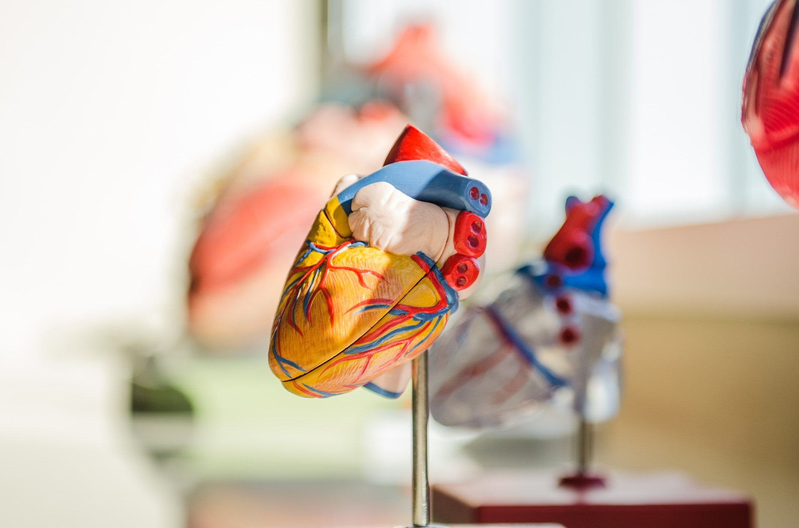

Evolution
For centuries, Philosophers ans Scientists have wrestled with the question of our origins. Where do we come from and how did we get here? Since Darwin proposed his theory of Evolution we have had a framework for exploring and understanding our place in this world.
Discover the origins of life on this planet and how the species we know today have evolved our time. You can also take some time to meet a few of the creatures who didn't survive, including our wooly mammoth, The Dodos and a number of Dinosaurs too.
Biology and Medicine
From micro-organisms to the human body, major breakthroughs in biolgy are offering us unique insights into the great wonders of the tiny world.
For many people their life expectancy is much longer and their quality of life much improved, thanks to the growth of our understanding of medicine. Over a series of exhibits we explore the history of medicine and take a look at some major breakthroughs including the discovery of penicillin and the first heart transplant.

Many of our great medicinal discoveries have come not only from the lab, but also from observing animals in the wild. Often our fellow creatures have beat us to it.
Robotics and AI
The information revolution is here and robotics and artificial intelligence are the science of the future.
From useful home applications of AI to industrial uses of robotics, the future is here.
You can even say hello and shake the hand of Rob the robot.
Ecology
As we learn more of the impact humans are having on the planet, the more important it becomes that scientists explore how to create a sustainable future not just for humans but for the whole planet.
In our ecology section of the museum, we unpack the dangers we currently face including global warming, extinction of scecies, and polution.